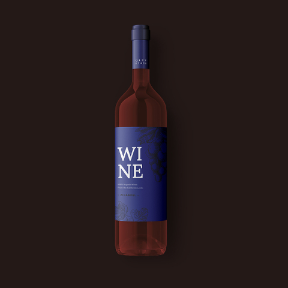

In stock
Product code 21
14,00 USD
This wine is produced from more ripened berries than usual. Core flavors are rich, with jammy blackberries and mocha. You can pair this wine with braised ribs, chicken enchiladas, or dark chocolate.